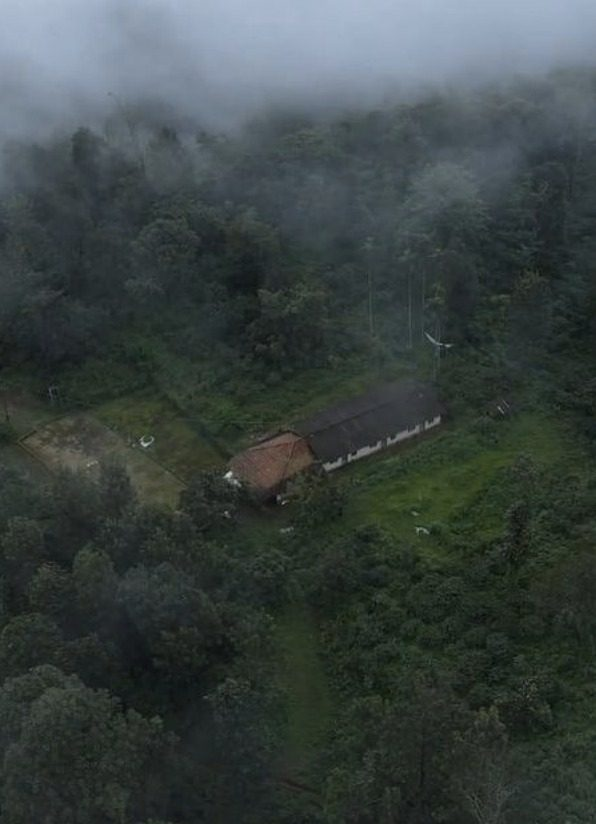
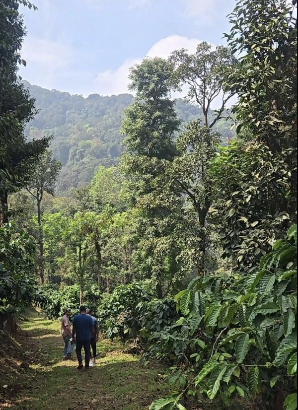

ロブスタ
ファインロブスタ
標高1,000m以上で栽培した高品質ロブスタ。クリーンで密度の高い豆は、コマーシャルからスペシャルティまで幅広いロースターのニーズにお応えします。
自社農園産 · プレミアム品質
インド・カルナータカ州クールグ（コダグ）の高地で40年以上受け継がれてきた自社農園から、ファインロブスタとアラビカのコーヒー豆をお届けします。日陰栽培・天日乾燥・無添加。ロースター、カフェ、大口バイヤーの皆様へ。
1,094m
標高（海抜）
40年+
受け継がれてきた農園の歴史
100%
在来樹の木陰での日陰栽培
6〜8日
農園での自然な天日乾燥
農園について
インド・カルナータカ州、西ガーツ山脈の保護林に接するクールグのパランガラにある当農園は、40年以上にわたり大切に守られてきました。
40年以上にわたり管理・栽培を続け、土壌とシェードツリーの樹冠が自然に成熟してきました。
農園で天日乾燥した、100%ナチュラルで混じりけのないコーヒー豆。標高の高いクールグ本来のテロワールをそのままお届けします。


テロワール
1,094m
標高
クールグのパランガラ、標高1,094mに位置し、密度が高くゆっくりと熟すコーヒーチェリーに必要な冷涼な気温帯に恵まれています。
100%
樹冠（キャノピー）
在来のシェードツリーの下で栽培し、表土の水分と在来の生物多様性を守っています。
高糖度
微気候
安定した微気候が自然な甘みを育み、果実の糖度（Brix）を高めます。
コーヒー
シェードの下で育ち、自社農園で天日乾燥したクールグ産のロブスタとアラビカ。酸味が穏やかでなめらかな味わいは、エスプレッソブレンドやブラックコーヒーに最適です。
ロブスタ
標高1,000m以上で栽培した高品質ロブスタ。クリーンで密度の高い豆は、コマーシャルからスペシャルティまで幅広いロースターのニーズにお応えします。
精製
香料・人工添加物・化学的な加工助剤を一切使用せず、太陽の下で自然に乾燥。農園本来の純粋な味わいをお届けします。
カップ
なめらかでバランスの取れたカッププロファイル。エスプレッソブレンドや伝統的なブラックコーヒーに適しています。
アラビカ
当農園の60%にはアラビカが植えられており、ファインロブスタとともに標高1,094mで日陰栽培されています。

混じりけのない農園産コーヒー。香料や化学的な加工助剤は一切使用していません。

サステナビリティ
01
厳格な基準の範囲内でNPK肥料と有機堆肥をバランスよく使用し、植物の健康と気候変動に強い土壌づくりを支えています。
02
現在は季節のモンスーンの雨を活用しており、今年は専用の雨水貯留ピットを建設中です。
03
多層的な天然の樹冠が、農園全体の表土の水分と在来の生物多様性を守っています。

供給体制
クールグ産コーヒー豆を農園から直接ご注文いただけます。サンプル数量から、ロースター・カフェ・輸出バイヤー向けの大口ロットまで対応いたします。
自社農園から直接お届けする、シングルオリジンのアラビカとロブスタ。
ご要望に応じて、地域の厳選されたパートナー農園を通じて追加数量やオーガニックのマイクロロットを調達できます。
透明性のある運営と確かな品質で、安全基準・コンプライアンス・お客様ごとの仕様にお応えします。

よくある質問
クールグ産のロブスタ・アラビカのコーヒー豆をお探しのロースター、カフェ、バイヤーの皆様からよくいただくご質問にお答えします。
南インド・カルナータカ州のクールグ（コダグ）は、西ガーツ山脈の森の木陰でコーヒーが育つ、インド有数のコーヒー産地です。当農園はクールグのパランガラ、標高1,094mに位置し、保護林に隣接しているため、密度が高くゆっくりと熟したコーヒーチェリーが育ちます。
両方です。当農園の60%にはアラビカが植えられており、加えて標高1,000m以上で高品質のファインロブスタも栽培しています。クリーンで密度の高い豆は、コマーシャルおよびスペシャルティのロースターに最適です。
100%ナチュラルで、農園で6〜8日間天日乾燥しています。香料、人工添加物、化学的な加工助剤は一切使用していません。
このページのお問い合わせフォーム、メール（coffeeichiban@gmail.com）、またはお電話（+91 98840 61496）でご連絡ください。数量、焙煎のご希望、時期をお知らせいただければ、サンプル・仕様・価格をご案内いたします。
はい。自社農園のシングルオリジンのアラビカ・ロブスタに加え、ご要望に応じてクールグ地域の厳選されたパートナー農園を通じて、追加数量やオーガニックのマイクロロットを調達いたします。
はい。コマーシャルおよびスペシャルティのロースター、カフェ、大口バイヤーの皆様とお取引しています。透明性のある運営と確かな品質で、安全基準・コンプライアンス・個別の仕様にお応えします。
お問い合わせ
運営：Ichiban Foods LLP
信頼と透明性に基づくパートナーシップを大切にしています。ご希望をお聞かせいただければ、サンプル・仕様・価格をご案内いたします。
